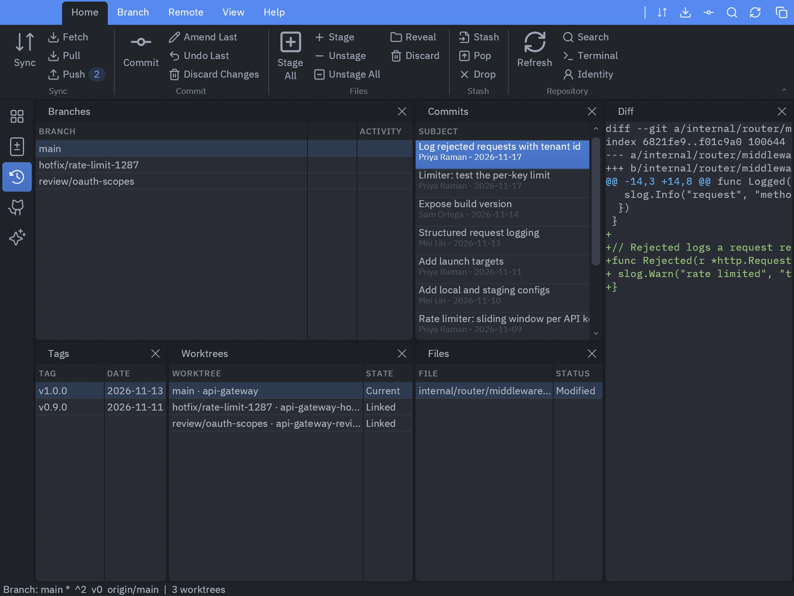
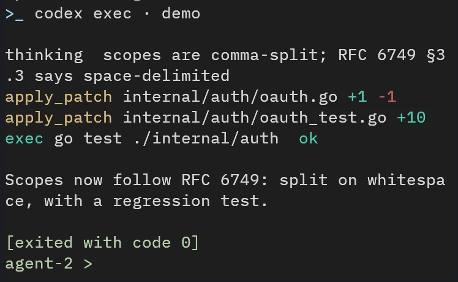
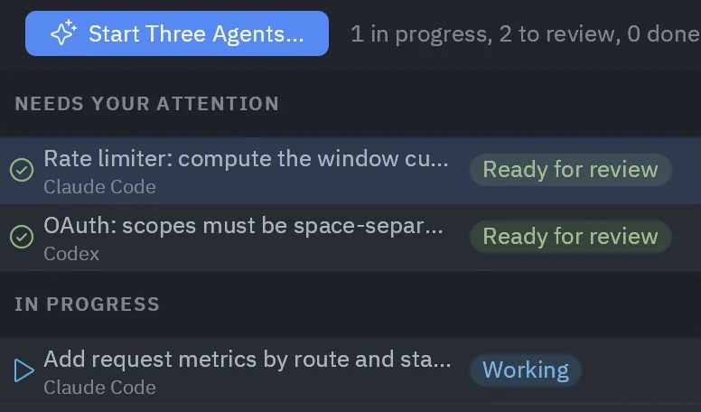
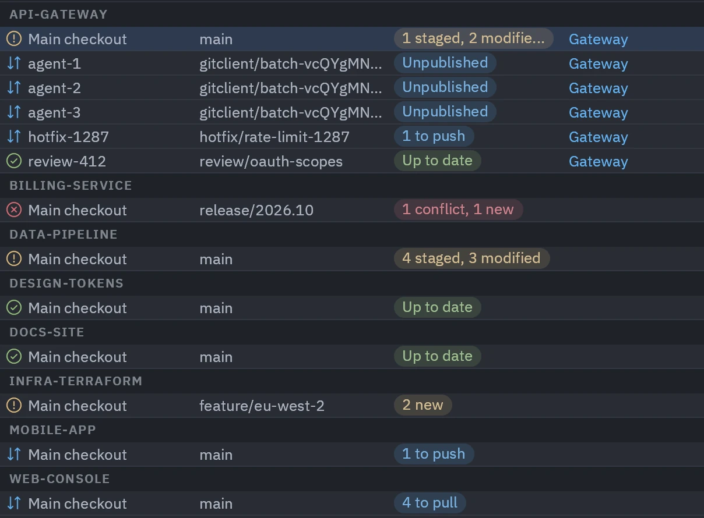

gitclient — workspace.gitworkspace2048×1536 · live capture




A native git client that shows every checkout of every repository, runs each branch from its own launch.xml, and lets Codex and Claude Code work three tasks in parallel — each on its own branch and worktree.
orion install gitclient

Each task gets a separate branch, worktree and terminal off the same base commit. What comes back is a commit, not a transcript.
Codex or Claude Code per row. They use their usual accounts from your PATH.
gitclient/batch-*-1..3 branches. Stop one agent, the others keep going.
A successful run with changes is saved on its task branch.
Detached worktree at the snapshot, default target from its launch.xml.




What it takes to answer “what did I leave behind?” across a workspace.
| Question | Terminal | Git Client |
|---|---|---|
| Which checkouts are dirty? | cd into each; git status | One Overview row each, amber icon, “3 modified, 1 new” |
| What's unpushed or behind? | git fetch; git rev-list --count @{u}.. | ⌘⇧R fetches all in the background; “2 to push” |
| Where are my worktrees? | git worktree list, per repo | Grouped under their repository, wherever git put them |
| How do I run this branch? | Read the README, hope | launch.xml targets per worktree, Run in a PTY |
| Did the agent's change work? | Find its worktree, diff, build, run | Review diff → Run Reviewed Revision |

Targets run in a PTY with colours and progress lines. A failed target opens its tab.
Drag a view's tab to group, split or reorder. Each page keeps its own layout.
No launch.xml? make, cargo, go, swift, cmake and npm scripts are found for you.
<!-- launch.xml --> <launch project="api-gateway"> <target name="Gateway" default="true" build="make build" run="bin/gateway --config ${config}"> <param name="config" choices="config/local.yaml config/staging.yaml"/> </target> <target name="Unit tests" kind="test" run="go test ./..."/> </launch>